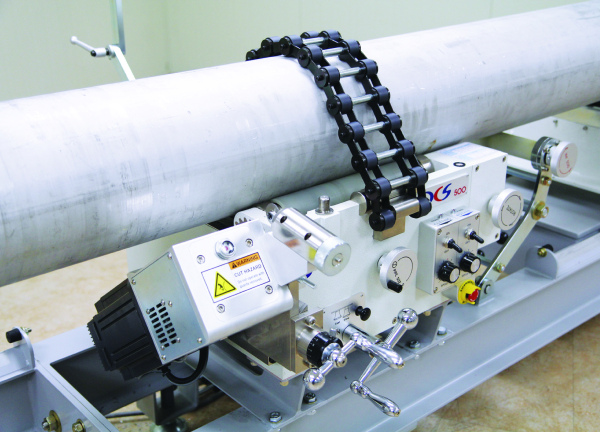

Российская компания, сфокусированная на современных технологических методах сварки, занимающаяся поставкой
и установкой оборудования для автоматической сварки.
Почему нам доверяют
Мы обладаем опытом и высокой компетентностью в области комплектации и поставки сварочного оборудования, а также разработки и внедрения сварочных технологических процессов
для различных отраслей промышленности.
Основной целью нашей компании является внедрение комплексной технологии, включающей в себя как работу отдельного рабочего до роботизированного ехнологического комплекса. Вместе мы сделаем профессию сварщика современной, привлекательной и престижной!

Качество товараo_kompanii_sertificaty
Мы работаем в сварочном сегменте с 2011 года, за это время мы успели наработать хорошие контакты с лидирующими производителями высокотехнологичного оборудования для автоматической сварки.
Профессиональные консультации со специалистом
В нашем коллективе работают инженеры с высшим образованием в области сварки, имеющие большой опыт разработки технологических процессов.
Продуманная логистика
Мы подбираем для Вас наиболее удобные и оптимальные по цене варианты доставки в короткие сроки. Как правило, небольшие коробки (до 10 кг) доставляет курьерская служба EMS Почта России.
Качество товараo_kompanii_sertificaty
Мы работаем в сварочном сегменте с 2011 года, за это время мы успели наработать хорошие контакты с лидирующими производителями высокотехнологичного оборудования для автоматической сварки.
Профессиональные консультации со специалистом
В нашем коллективе работают инженеры с высшим образованием в области сварки, имеющие большой опыт разработки технологических процессов.
Продуманная логистика
Мы подбираем для Вас наиболее удобные и оптимальные по цене варианты доставки в короткие сроки. Как правило, небольшие коробки (до 10 кг) доставляет курьерская служба EMS Почта России.